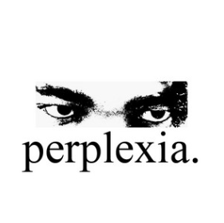

Featured Releases
Recent Tracks

Perplexia
2025
A soft indie anthem filled with nostalgic guitars, emotional hooks, and dreamy vocals.
Play Preview →
Tomorrow Will Worry About Itself
2025
A late-night alternative groove inspired by changing friendships and growing pains.
Play Preview →
O N S R A
2025
A mellow bedroom-pop release about healing, self-growth, and learning patience.
Play Preview →